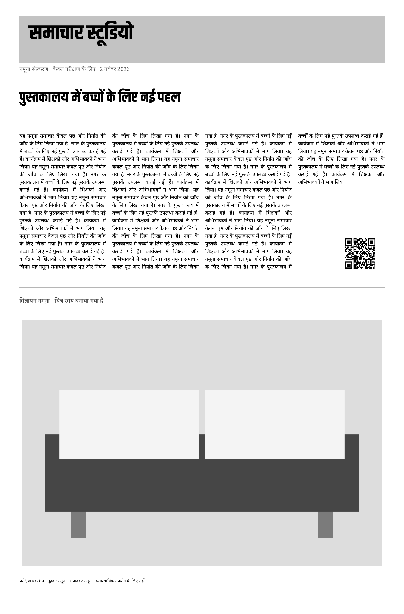
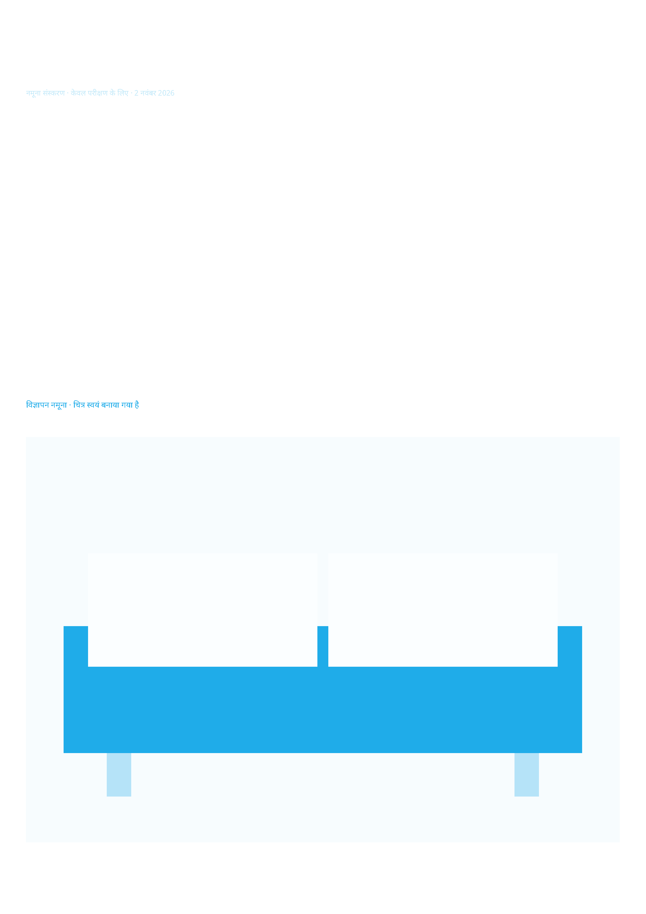
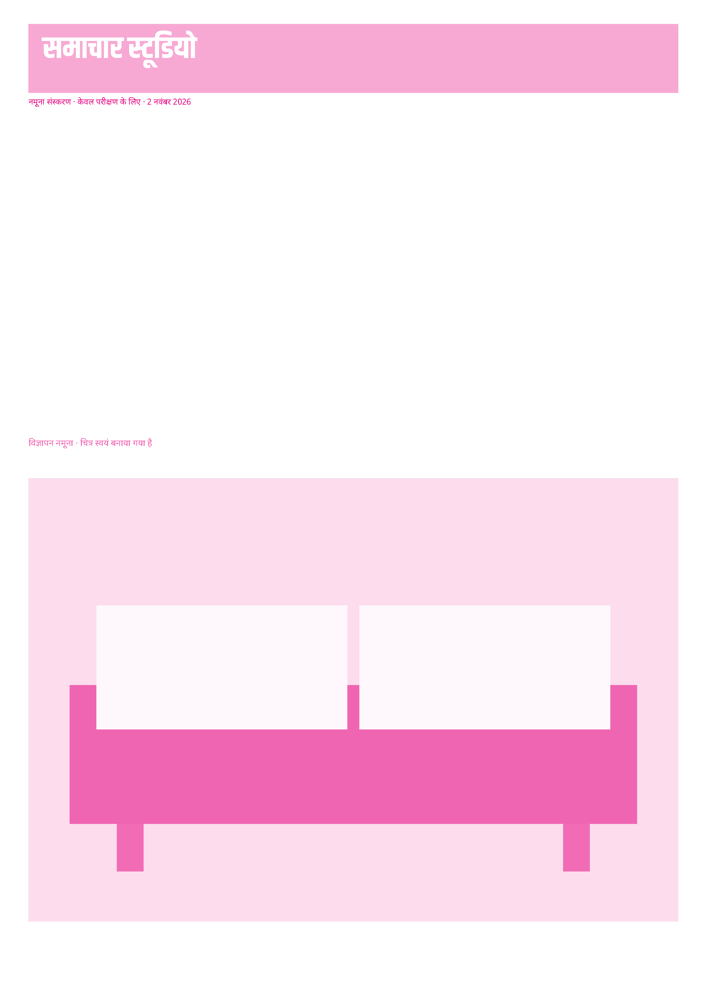
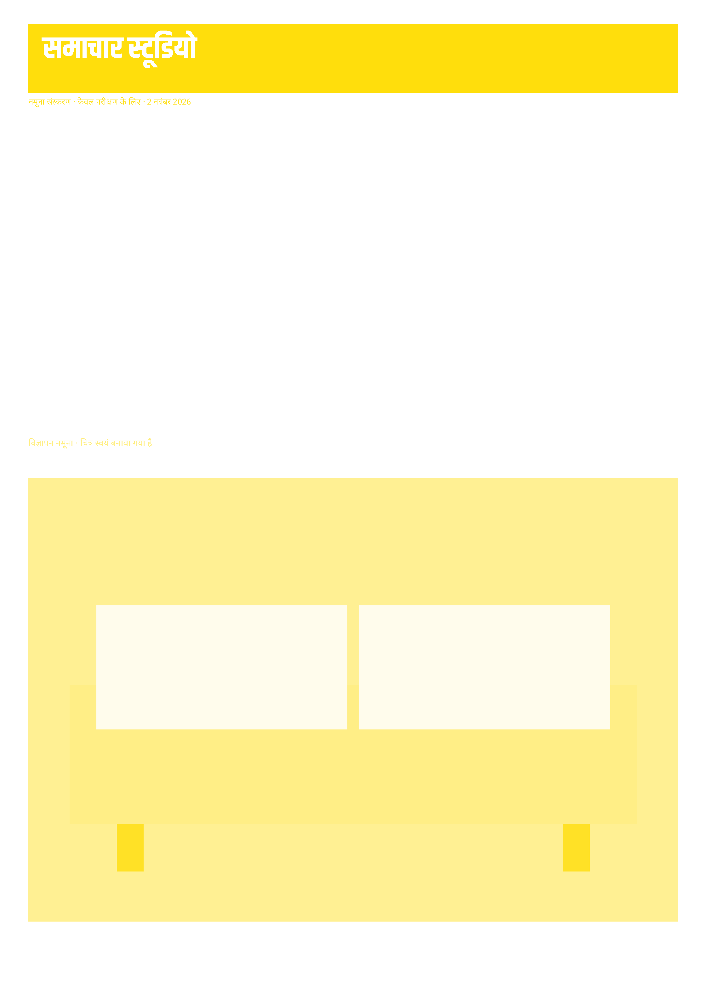
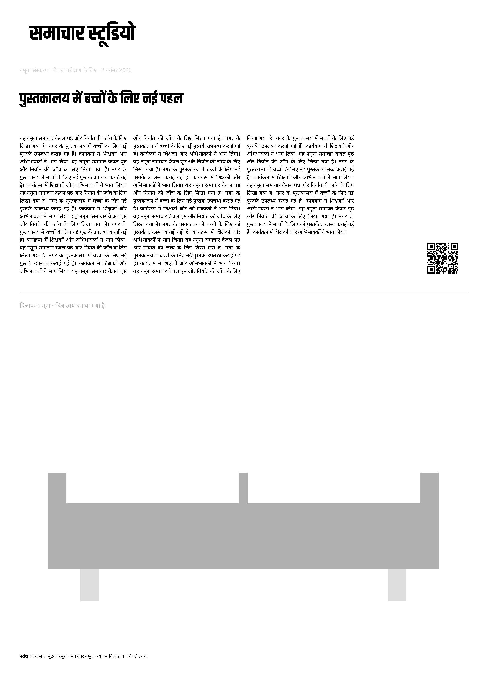
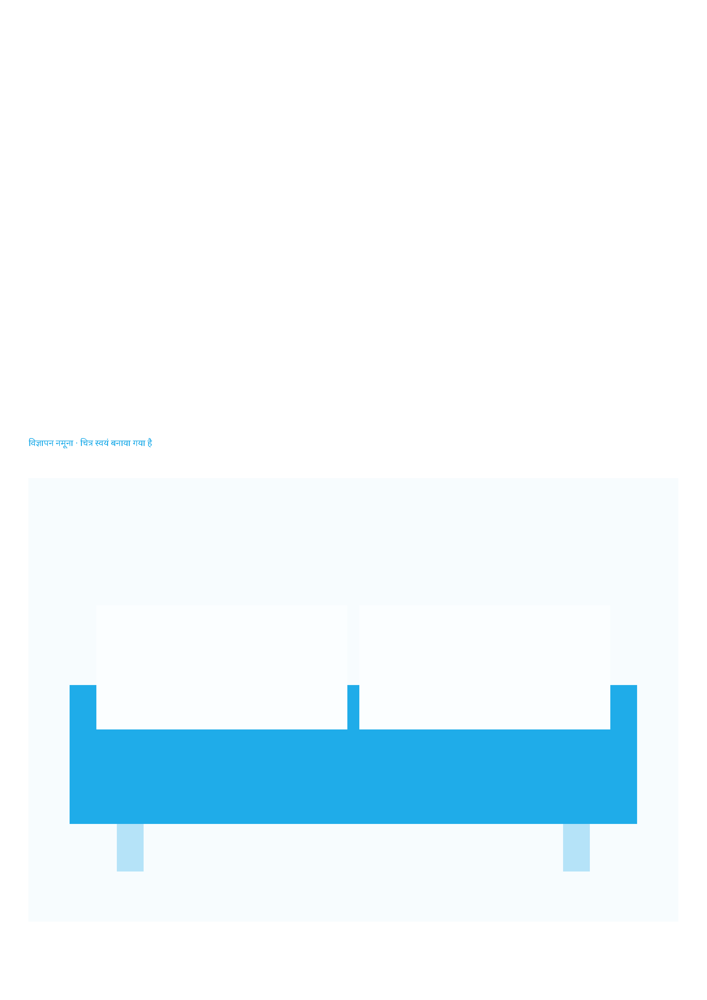
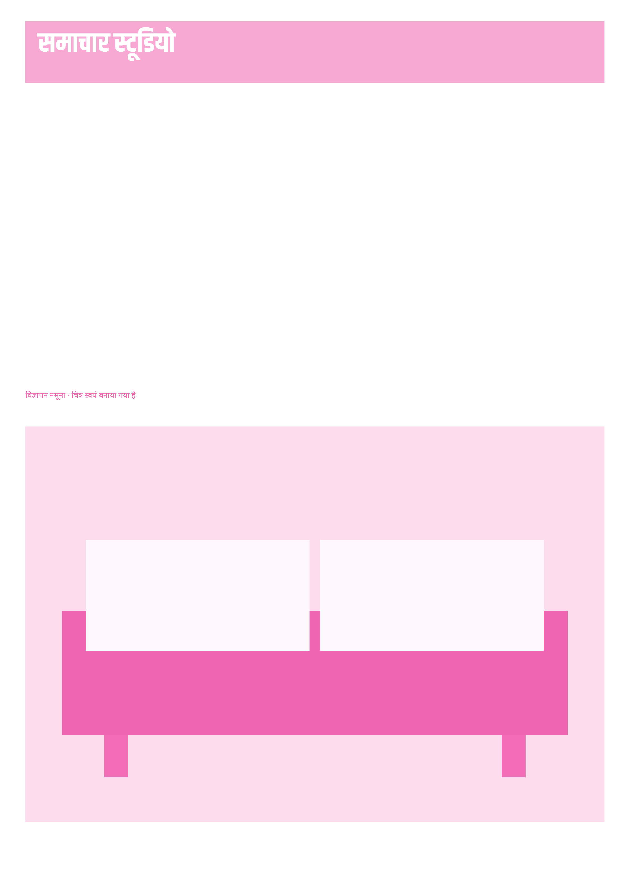
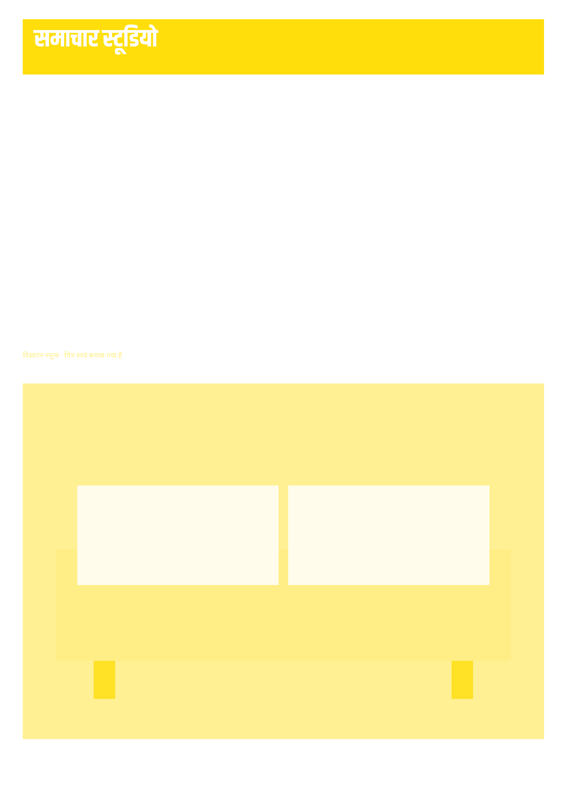
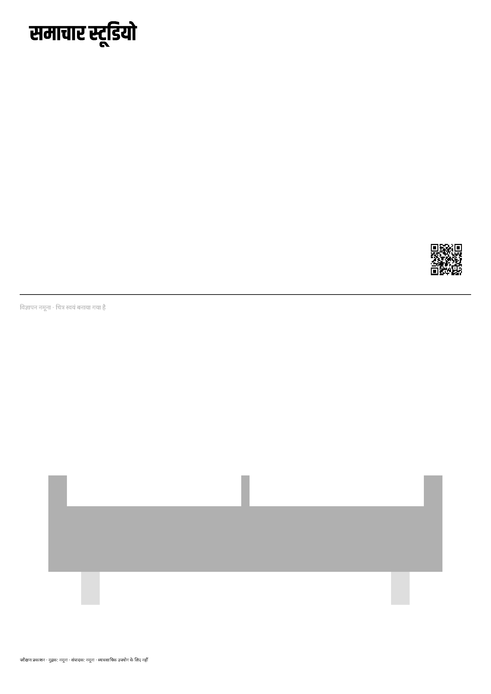
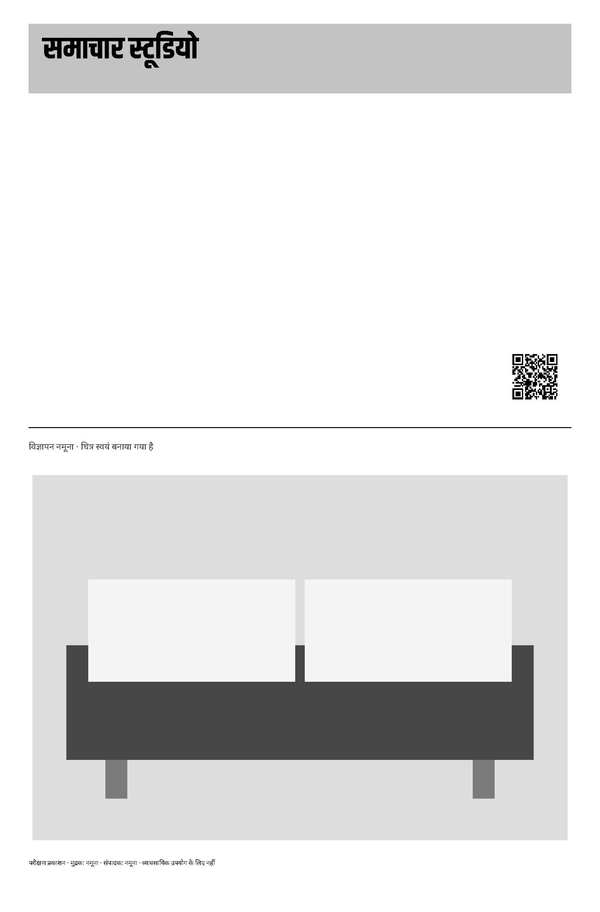

The established neutral-to-K colour route and Gray route are connected to the shared document renderer. These are two-page synthetic issues at two page sizes.
Screen/intermediate PDF comparison
Open checked PDF · Full report and assumptions
| Check | Actual result |
|---|---|
| Pages | 2 |
| Fonts | 4, all embedded and subset |
| Final maximum ink | 226.67% (limit 240%) |
| Neutral interior pixels checked | 174439; 0.0109% failed (limit 0.5%) |
| PDF/X target | PDF/X-3:2002; independent certification pending |








Open checked PDF · Full report and assumptions
| Check | Actual result |
|---|---|
| Pages | 2 |
| Fonts | 4, all embedded and subset |
| Final maximum ink | 100% (limit 240%) |
| Neutral interior pixels checked | 172455; 0% failed (limit 0.5%) |
| PDF/X target | PDF/X-3:2002; independent certification pending |




Uses bundled Ghostscript output profiles provisionally, not a claimed national press standard. Zero bleed and no crop marks are supported now; other values fail explicitly. Source documents and conversion diagnostics are preserved with each output.